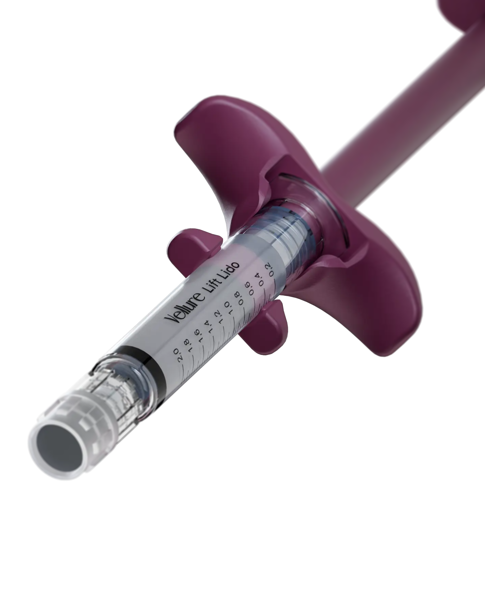
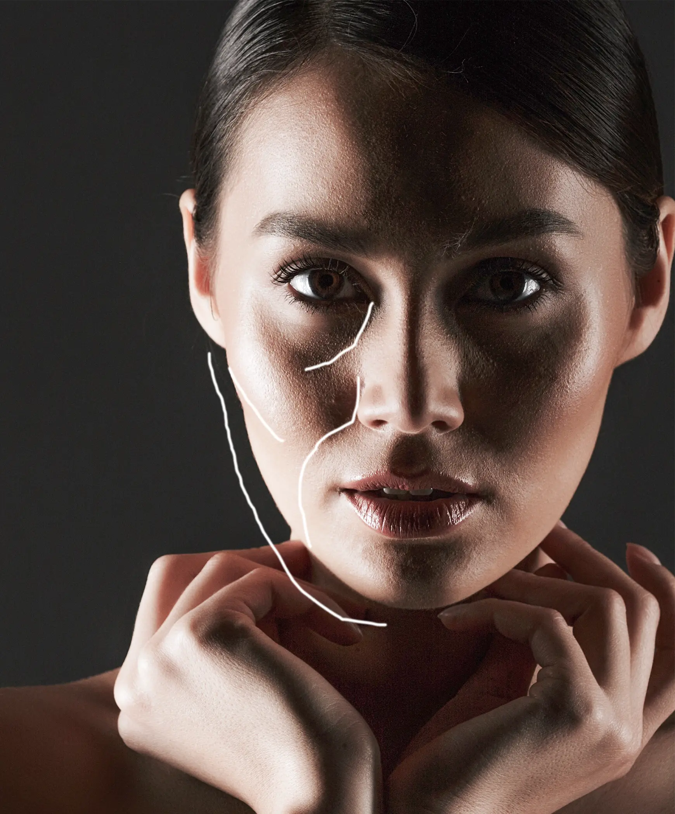
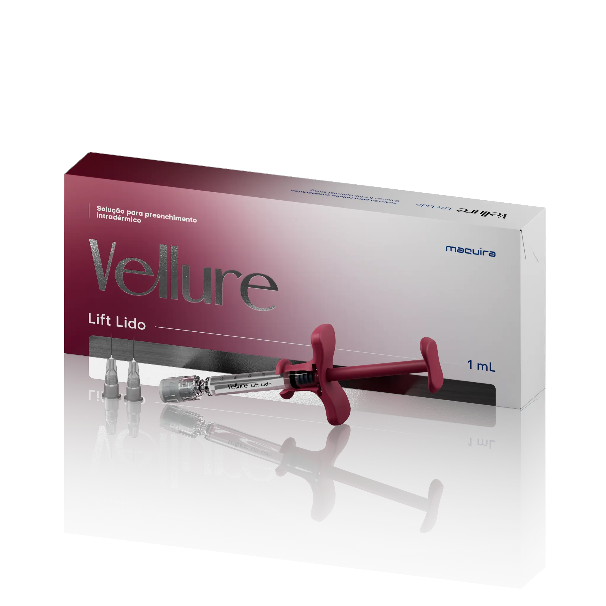
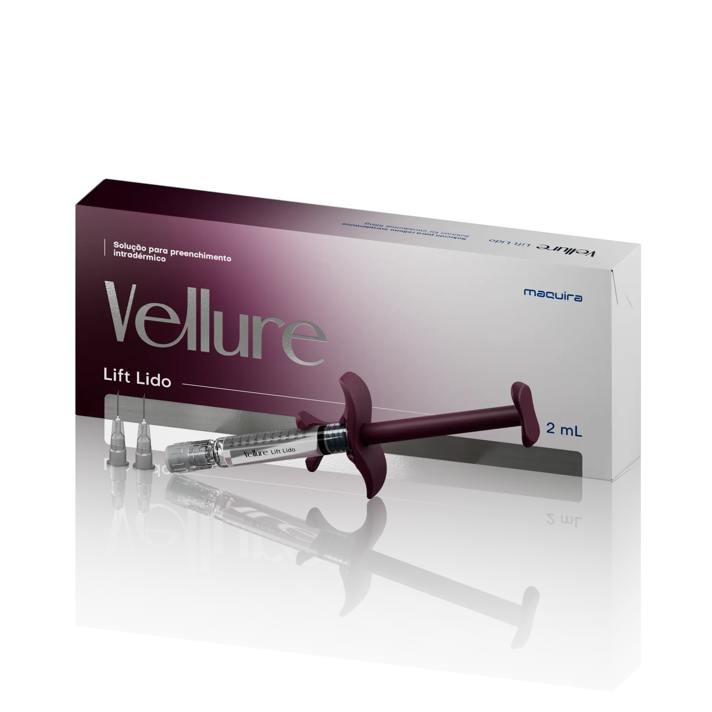

Contorno facial
Definição para acompanhar a anatomia e valorizar cada traço.



Depois de anos ao lado do cirurgião-dentista em diferentes etapas da rotina clínica, chegamos ao mercado de harmonização, com o nosso primeiro preenchedor à base de ácido hialurônico.
Um gel com alta capacidade estrutural, desenvolvido para oferecer suporte, definição e volumização em procedimentos de contorno facial.


Vellure Lift Lido é destina-se a ser administrado através da injeção na derme profunda ou na mucosa dos lábios por um profissional de saúde autorizado.
Definição para acompanhar a anatomia e valorizar cada traço.
Realce equilibrado para pontos estratégicos do rosto.
Reposição de volume com suavidade e integração aos contornos faciais.
Suporte estrutural para uma elevação sutil e harmoniosa.
que ajuda a tornar o procedimento mais confortável para o paciente.
Processo produtivo desenvolvido para entregar um gel de alta pureza, seguindo rigorosos padrões de qualidade.
o produto foi desenvolvido com propriedades de elasticidade, viscosidade e sustentação específicas e adequadas para a indicação de uso.
Praticidade para procedimentos pontuais

Mais volume para tratamentos completos e com melhor custo-benefício

Contorno facial, projeção, volumização e efeito lifting. Um gel de alta capacidade estrutural, indicado para procedimentos que exigem suporte e definição.
Além da lidocaína na formulação, que torna a aplicação mais confortável para o paciente, Vellure Lift Lido conta com seringa em vidro premium, marcação de graduação a cada 0,05 mL e agulhas Terumo 27G½” TW. Um conjunto pensado para oferecer mais controle e precisão em cada aplicação.
Até 18 meses, podendo chegar a 24 meses, conforme estudos realizados. A durabilidade pode variar de acordo com a região tratada, a técnica e as características de cada paciente.
17,5 mL de ácido hialurônico e 3 mg/mL de cloridrato de lidocaína.
Este produto foi desenvolvido para ser injetado na derme profunda ou na mucosa dos lábios por um profissional de saúde habilitado em um ambiente adequado, de acordo com a regulamentação local aplicável. No intuito de minimizar os riscos de potenciais complicações e como a precisão é essencial para um tratamento bem-sucedido, o produto deve ser usado apenas por profissionais de saúde com treinamento apropriado e experiência em técnicas de injeção.
Vellure Lift Lido deve ser armazenado na temperatura de 2 °C a 25 °C em local fresco, seco e longe da luz.
Você pode adquirir o Vellure Lift Lido através de distribuidores autorizados. Para mais informações sobre pontos de venda e disponibilidade na sua região, entre em contato com nossa equipe.
Cadastre-se e receba um aviso assim que o Vellure Lift Lido estiver disponível na sua região.